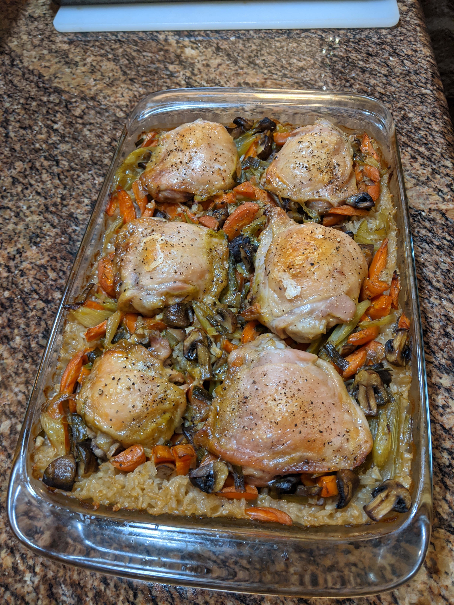

Odin's Chicken Risotto

Description
This is a delicious and easy to make dish that pleases even the most mighty gods.
Made in a single baking sheet, this dish combines meat, rice, and vegetables for a healthy
all-around meal.
Ingredients
- Chicken
- Rice
- Carrots
- Celery
- Green Onion
- Chicken Stock
- White Wine
- Salt and Pepper
Steps
- Cook down the vegetables in a large pot. Add the white wine and allow to reduce.
- Place rice in a 9x13 baking dish and cover with vegetables.
- Pour chicken stock over the veggies and rice.
- Place chicken on top of all this and cover dish with foil.
- Bake for one hour, take off foil and bake for another 30 mins. Finish with broiler for 2-3 minutes if chicken is desired more crispy.